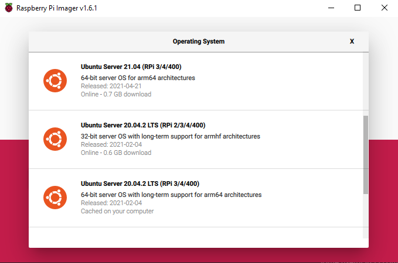

ROS Installation and Setup
Materials
- Raspberry Pi 4
- Sandisk microSD card (32 GB)
- microHDMI (A-M)
- Keyboard (and mouse, maybe)
- Ethernet for the Pi to facilitate the installation
Installing the OS
First, install the Raspberry Pi Imager. Open it and choose an OS, in my case Ubuntu Server 20.04. I'm using the server distro since in the final product we won't need a desktop or an guis for that matter. Make sure to choose the 64-bit distro. Before imaging, make sure your microSD is connected to your computer.

Once ubuntu is installed, put the microSD into the Pi, plug in the ethernet (or use normal WiFi). On your first boot, connect an HDMI and keyboard (no mouse needed) to access the command line. Once you are in, run sudo apt update and sudo apt upgrade to make sure everything is up to date and test your network connection. Once you see everything works, you need to set your static hostname so you don't have to connect with IP using ssh.
hostnamectl set-hostname <your_hostname>
# ex
hostnamectl set-hostname hello_world
hostname and see if the result matches your input. To connect with SSH, I configured the pi with a hostname of hyperion4516 and a default username of ubuntu.
Note
For debugging the IP of your pi, I recommend using Advanced IP Scanner. Look for an ubuntu username and copy the IP. You can use ssh ip_address to connect as as well.
Connecting with SSH
Using OpenSSH (on any OS, really) you can connect to the Pi with:
ssh ubuntu@hyperion4516 # username@hostname
hyperion4516.
Note
You can also use PuTTY, which might actually be a better solution. It has easy configs but an ugly command line (But you can fix that). It makes gui forwarding very easy.
Installing ROS
From the SSH client connected to the server, you can then follow the installation guide for ROS Noetic. Install ros-noetic-desktop-full for all the packages you need. Make sure to properly configure and source your .bashrc file for use in ROS with these commands:
echo "source /opt/ros/noetic/setup.bash" >> ~/.bashrc
source ~/.bashrc # It will automatically source now
cd ~/catkin_ws # go to the workspace
catkin_make # build the packages
source devel/setup.bash # make sure the CLI knows about them
. ~/catkin_ws/devel/setup.bash does the exact same thing as the last line in the snippet above. Both add the workspace to the ROS Environment. To confirm, run
echo $ROS_PACKAGE_PATH # the ws directory should be included
roscd <package> # go to package directory
rosls <package> # list the subdirectories and files in package
rosed <package> <file> # edit package file with Vim
Using Byobu
Once you are done with the basic setup, I would recommend running byobu to activate a window switching command line thing. It helps with ROS stuff. Some simple hotkeys are:
F2: to create a new windowF3, F4: To switch between active windowsShift + F6: To close active window
Here is a cheatsheet with most of the comands.
The setup should be all done!